From: Martin Chandler, To: Chandler Family
Stationary Info: Signal Corps Recreation House (National Leauge for Women's Service) P.O. Little Silver N.J. Tel. 291 Red Bank
October 20th, 1917
Dearest Papa, Mama, and all,
Received Papa's letter yesterday and sure glad to get it. Been on guard last 24 hours. Rained all night and most of the morning but, of course, that doesn't stop one from walking post. I didn't have my raincoat with me and I was soaked clear through. Awful cold too. The Radio Detachment left today for France. Again, some rumors that we will leave shortly but you can't feel a thing about it. May go at any time and again may not go at all. We wear two identification tags now. Each one has our name, rank and organization on it. One to be buried with us in case of death and the other one sent to parents. So if you ever get a little round tag with my name on it you can hang out the black ribbon. I'm not worried about not coming back. Think will make it OK in case we should be sent over. Suppose you read of the American Trouspers being torpedoed by German submarine. Fortunately it was returning and not many aboard to lose though and that's bad enough.
We are having a field meet in this camp next Wednesday. All sorts of contests. I haven't entered in any of them. Don't think I could compete very strong in any of the athletic events. We're having a wire contest though, between different Battalions to see who can set up radio station and open telegraph stations in shortest length of time. Of course I'll take part in that. Awful glad Knox's arm is mending rapidly. Hate to see him miss so much school.
A fellow in our company received a letter from one of the boys in France today. Was dated "France, September 15th" and had been censored. Didn't say a thing about their locations or of the conditions existing over there. Was over a month on the road so If I get over there and you don't hear from me very often, you'll know the reason why.
Yes it's only four more days until papa's birthday. Wish I had something to send him. Sure hope the men on Ca get a raise. Prices keep going up but not so the wages. Lordy I'd like to be back at work. Sure work in the Army. Fatigue nearly all the time when we're not drilling and drilling isn't any play. First thing after Breakfast we police up the camp. Pick up all the matches, cigarette butts, pieces of paper, etc. First call for Reville (Rev-a-le) at 5:45 am. Assembly 6 am, water and feed horses immediately after reville. Breakfast at 6:30 am then clean up camp, as I mentioned above. After get camp cleaned up we groom the horses up to 7:45 am, Calisthenics 7:45 to 8:30 am, mounted drill 8:30 am to 11 am, groom horses on return tom drill then water, feed and put on horse blankets. 1 pm to 2 pm we have visual signaling, 2 pm to 3 pm Buzzer practice. From 3 to 4 pm have nothing to do. 4 pm water and feed horses, 5 pm stand retreat and then we're all through for the day. Friday evenings we clean equipment instead of drilling. Saturday morning is inspection and Saturday evening and all day Sunday have nothing to do except grokm and feed horses. Mounted drill on Monday is tactical, tha is =, opening telegraph stations and stringing wire cross country. The company is divided up into 4 sections, each section consisting of about 14 men, sometimes not that many. Each section taken wire cart and reel out wire across country, each connecting with one of the other sections so as to establish a complete line of communication between all sections. Each section opens two stations. The first station relating all messages to next section and so on until message has reached destination. Each section forms groups of four numbering 1 to 4 from left to right. No 1 is operator, no 2 and 4 Linemen, and No 3 the horse holder. When command is given to open station the first set of four rides around to reel at cart, reel cart being in rear of each section. All dismount dn turn their horses over to Horse Holder (No.3). The operator gets a Buzzer, ground rod, pencil and pad out of reel carts and connects onto wire, thus opening first station. The reel cart then drives on feeling out wire as it goes. The do it in a gallop. The men who didn't take part in opening first station ride ahead of the feel cart in the formation I mentioned before and the two linemen follow the cart and see that the cart and see the wire is put in proper shape and no breaks. They patrol the line continually between stations bring responsible for its maintenance and if they find it broken at any point or someone has cut it they immediately replace it. Sometimes the Captain will cut it to see if the linemen are on the job. After we get through sending messages ect., command is given to close station. Then ge outs his instrument and other articles back in. Cart and the reel cart winds up on reel. Two men ride behind with pike poles (pool with hook on end so wire will slip through it) and see that it doesn't get tangled up. Doesn't take very long to string out 5 or 10 mile of wire. All sections assemble and come back into camp.
On Tuesdays and Thursday we have equilation. Think I mentioned that before. Riding without feet in stirrups, etc. Anyway I dread it most of all. It's purpose is to train us to balnce ourselves in saddle. Wednesday and Fridays we have company drill, close order. Each section is formed in sets of fours same as in other drill except it doesn't make any difference how we are placed or whether we're number 1, 2, 3, or 4. This drill is just to teach us different formations such as "right, or left, about," "right or left front into line," "right on left flank," so that Commander on Battle field can get his company into whatever formation he sees fit by giving the command.
well it's getting pretty late so I'll close and go to camp. Can't describe very well, just what we do but its not a bit complicated.
Hope this finds every body well. I'm feeling fine, physically. Guess the fatigue we get is good for us.
Everybody write soon and Happy Birthday to papa,
Lovingly,
Martin


 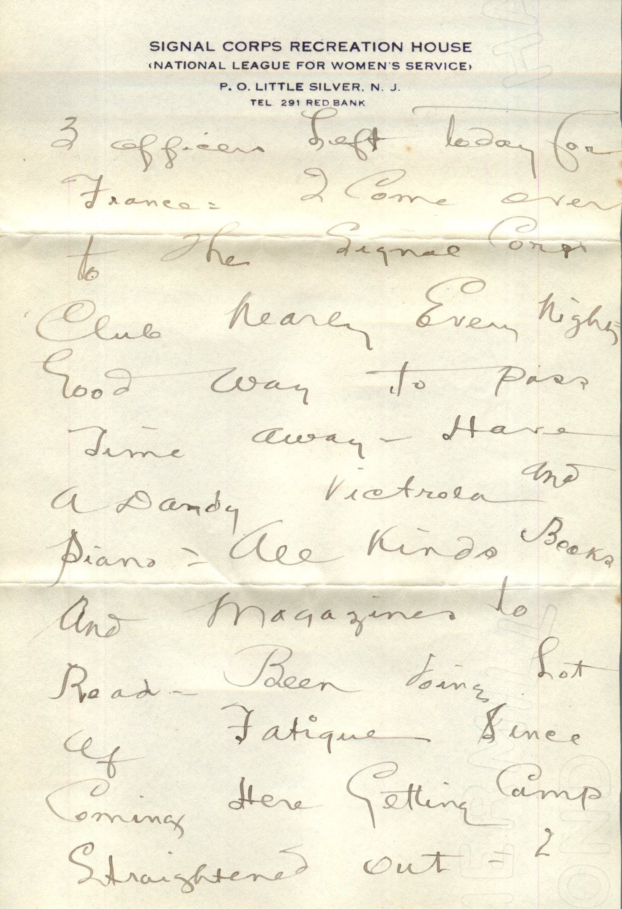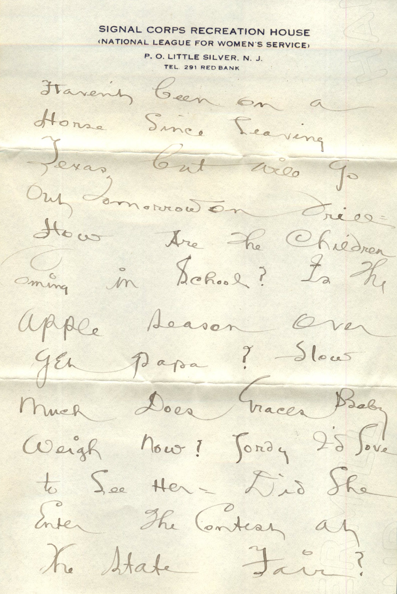
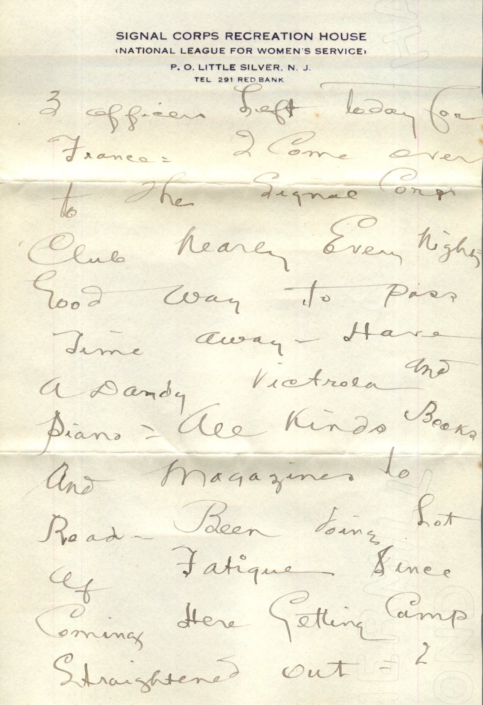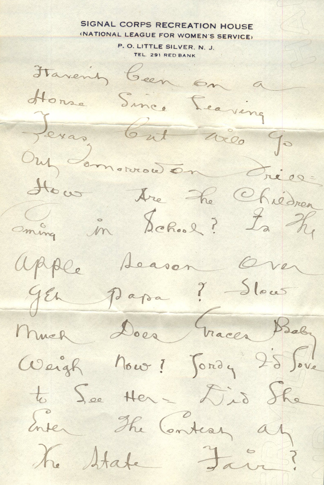 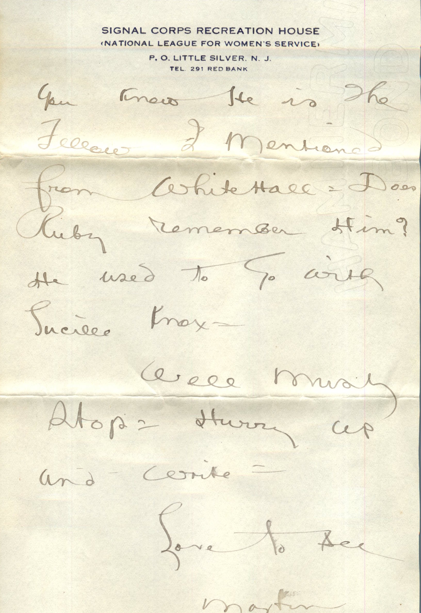
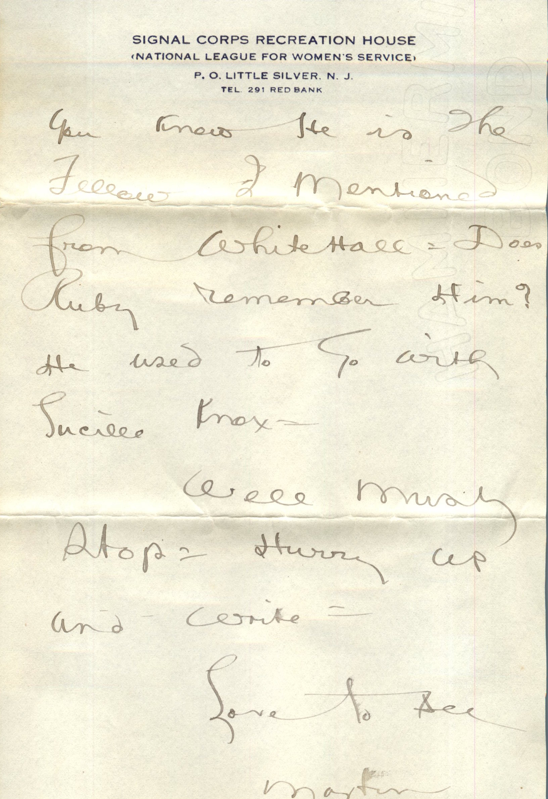


 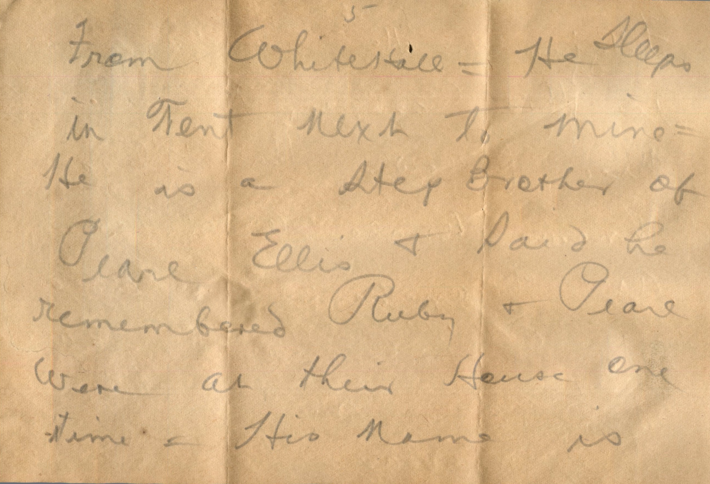
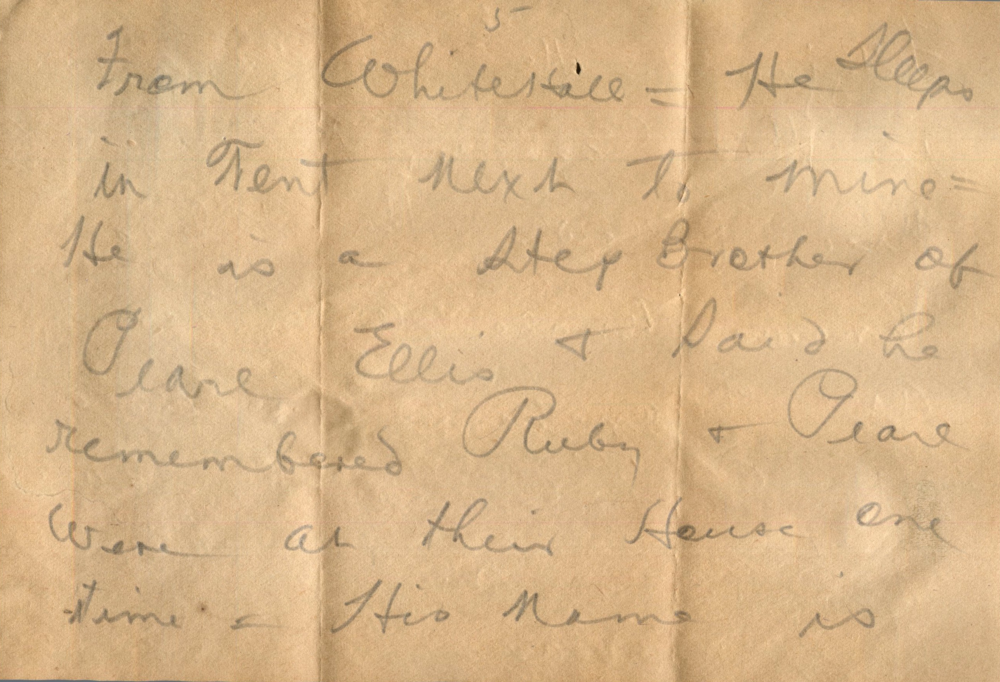 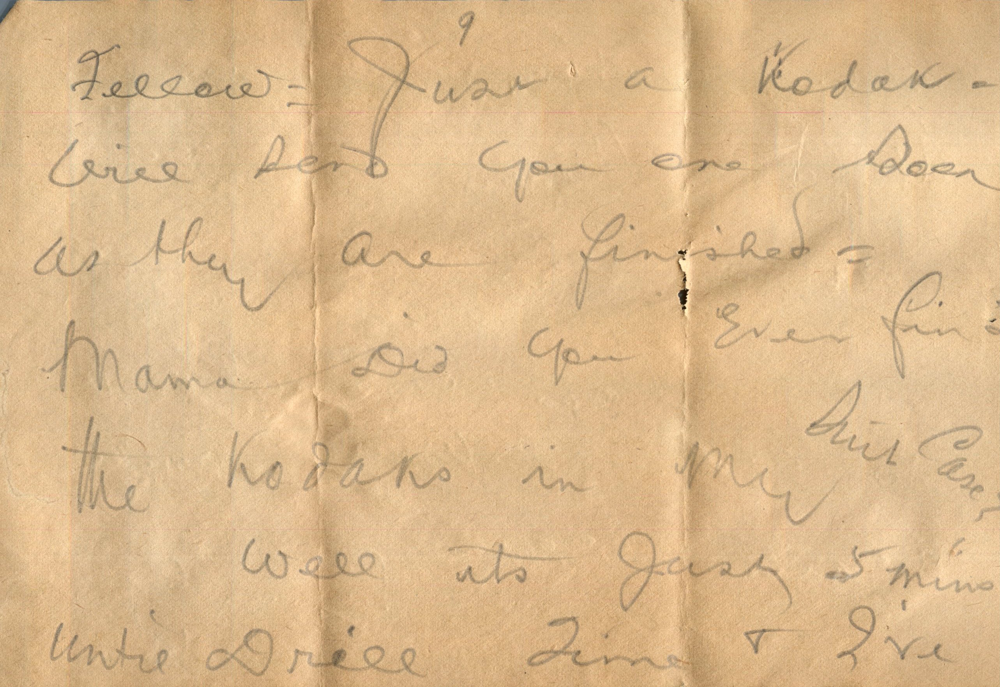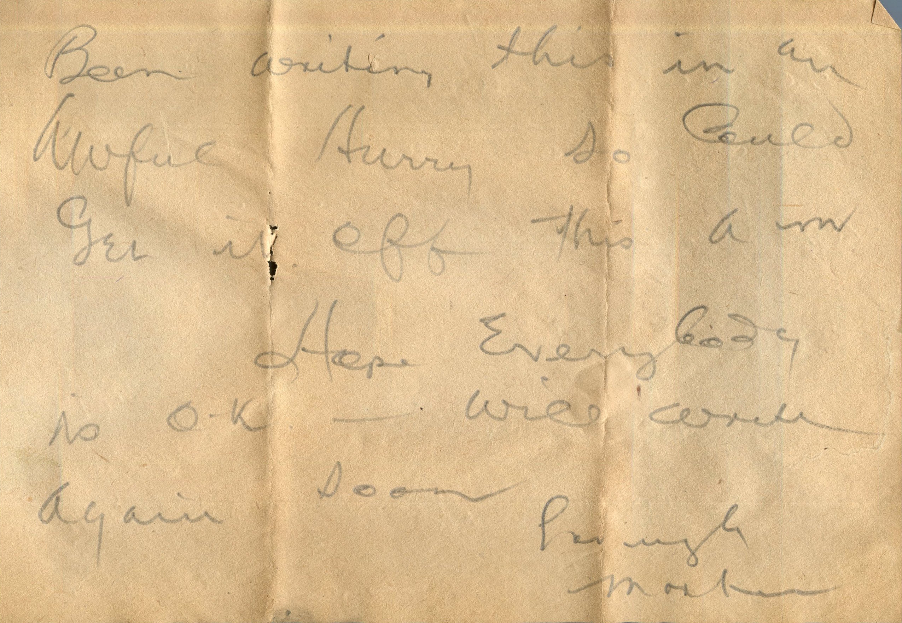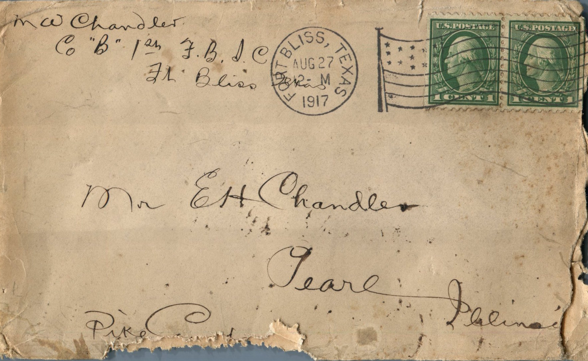
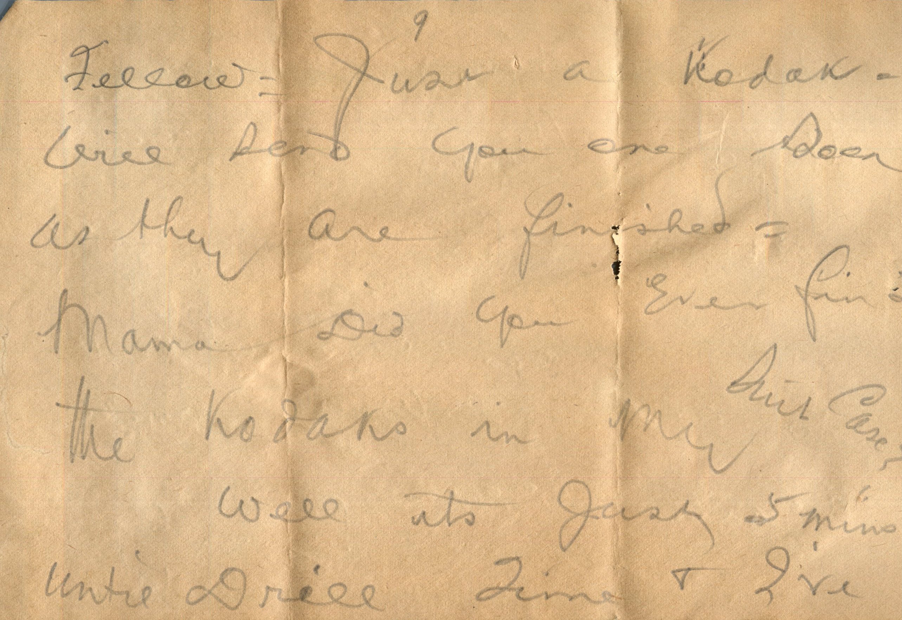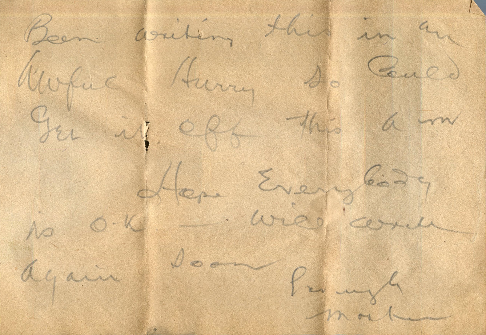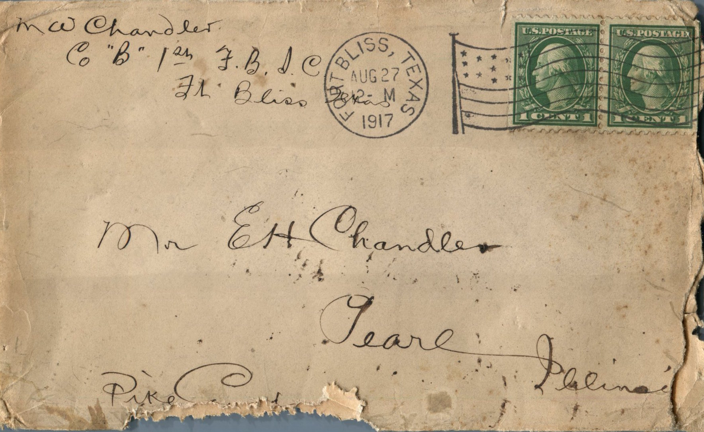


{kind=link}
{kind=link}
{kind=link}
{kind=link}
{kind=link}
{kind=link}